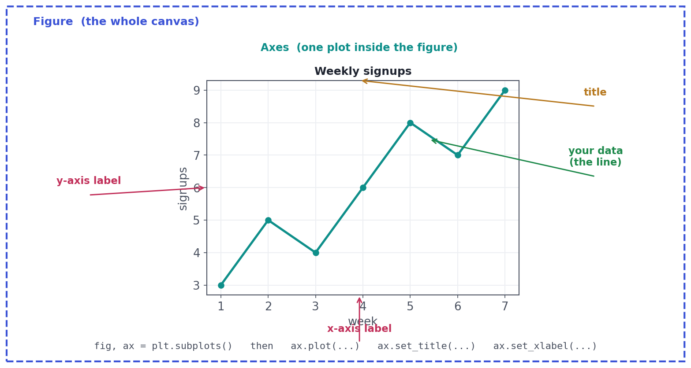

The Plotting Toolkit: Matplotlib & Seaborn
How to actually make charts: the figure/axes model, and seaborn's one-line statistical plots.
The last lesson said EDA means 'plot it' — so let's learn how to actually make a chart. Python's plotting rests on two libraries: matplotlib, the powerful engine that draws everything (with full control), and seaborn, a friendly layer on top that turns common statistical charts into one line. Knowing the small core of both means you can go from a DataFrame to a clear picture in seconds — the everyday motion of exploratory work.
ConceptThe matplotlib mental model: Figure and Axes
Almost all confusion with matplotlib disappears once you hold two objects in your head:
- The Figure is the whole canvas — the outer container, the image you save.
- An Axes is one plot inside that figure (its plotting area, with its own title, x-axis, and y-axis). A figure can hold several Axes (that's how small multiples work).
The clean way to start is fig, ax = plt.subplots(), which hands you both. You then call methods on the Axes — ax.plot(...), ax.set_title(...), ax.set_xlabel(...) — to build the chart.

Worked exampleDrawing the basic charts
Every chart follows the same shape: get a figure and axes, draw your data, label everything, then show or save. Here's a histogram and a bar chart in pure matplotlib (press Run to see them render).
import numpy as np
import matplotlib.pyplot as plt
values = np.random.default_rng(0).normal(50, 12, 500)
fig, ax = plt.subplots(figsize=(7, 4)) # 1. get the Figure and one Axes
ax.hist(values, bins=30, color="#3b53d6", edgecolor="white") # 2. draw the data
ax.set_title("Distribution of scores") # 3. label everything
ax.set_xlabel("score")
ax.set_ylabel("count")
plt.tight_layout()
plt.show() # 4. show it (or fig.savefig("chart.png"))plt.subplots() (the object-oriented style, drawing on ax) is the habit to build. You'll also see the shorter plt.plot(...) / plt.hist(...) 'pyplot' style in tutorials — it's fine for a quick one-off, but the explicit fig, ax approach scales cleanly to multiple plots and is easier to customize.
ConceptSeaborn: statistical charts in one line
seaborn is built on matplotlib but speaks DataFrames. You hand it your data and the column names, and it produces a polished statistical chart — often with one call. Its killer feature is hue: pass a categorical column and seaborn automatically colors and splits by it, adding a whole variable for free. The everyday functions mirror the chart-chooser: histplot, barplot, scatterplot, boxplot, lineplot.
import pandas as pd, numpy as np
import seaborn as sns
import matplotlib.pyplot as plt
rng = np.random.default_rng(1)
df = pd.DataFrame({
"ad_spend": rng.uniform(0, 100, 200),
"revenue": rng.uniform(0, 100, 200) * 5 + 100,
"plan": rng.choice(["Free", "Pro"], 200),
})
# One call: scatter of two columns, colored by a third (hue) — try doing that by hand!
sns.scatterplot(data=df, x="ad_spend", y="revenue", hue="plan")
plt.title("Revenue vs. ad spend, by plan")
plt.tight_layout()
plt.show()Rule of thumb: reach for seaborn first for standard statistical charts on a DataFrame (histograms, boxplots, scatter with hue, correlation heatmaps, pair plots) — it's faster and prettier by default. Drop to matplotlib when you need fine control: custom annotations, exact axis tweaks, combining several plots. Because seaborn is matplotlib underneath, you can always grab the axes and adjust.
★ Key points to remember
- Figure = the whole canvas; Axes = one plot inside it. Start with
fig, ax = plt.subplots()and draw onax. - Every chart: get figure/axes → draw data → label (title, x, y) →
show()orsavefig(). - Prefer the object-oriented style (
ax.plot) over bareplt.plot— it scales to multiple plots. - seaborn speaks DataFrames:
sns.histplot/barplot/scatterplot/boxplot, withhue=to split by a category for free. - Use seaborn for quick statistical charts, matplotlib for fine control — they work together.
x vs y colored by a group column, fast. What's the most efficient tool?◆ Practice▸
Show solution & reasoning
- Create figure & axes:
fig, ax = plt.subplots(). 2. Draw the data: e.g.ax.hist(values),ax.bar(cats, vals),ax.scatter(x, y), orax.plot(t, y). 3. Label:ax.set_title(...),ax.set_xlabel(...),ax.set_ylabel(...). 4. Output:plt.show()to display, orfig.savefig("chart.png", dpi=150, bbox_inches="tight")to save.
Show solution & reasoning
When you need fine control that seaborn's one-liners don't give: custom annotations and arrows, precise axis limits/ticks, unusual chart types, or carefully arranged multi-panel figures. Since seaborn is built on matplotlib, a common pattern is to draw with seaborn, then grab the axes and use matplotlib calls to fine-tune (titles, annotations, limits).
◎ Deep dive: pyplot vs. object-oriented, saving figures, and the grammar of graphics▸
Two interfaces, one library. matplotlib has a pyplot (state-based) interface — plt.plot(), plt.title() act on the 'current' axes — and an object-oriented interface where you hold fig and ax objects and call methods on them. The pyplot style is quick for a single throwaway plot; the OO style is clearer and essential once you have multiple subplots (fig, axes = plt.subplots(2, 2) gives a grid you index like axes[0, 1]). Learn the OO style as your default — every small-multiples chart in this course uses it.
Saving figures well. fig.savefig("chart.png", dpi=150, bbox_inches="tight") controls resolution (dpi) and trims surrounding whitespace (bbox_inches). Save as PNG for slides and the web, SVG/PDF for crisp, infinitely scalable vector graphics in reports. Set the size up front with figsize=(width, height) in inches — a chart designed at the size it'll be shown always looks better than one squished afterward.
The grammar of graphics. seaborn (and libraries like plotnine/ggplot, Altair, and Plotly) lean on a deep idea: a chart is built by mapping data columns to visual channels — x, y, color (hue), size, facet. Once you think in those mappings ('put time on x, revenue on y, region on color, channel on facets'), choosing and building charts becomes systematic rather than fiddly. It's the same column-to-channel thinking behind the perception ranking from Lesson 5.3.
You won't be quizzed on plotting syntax much, but take-homes are judged on whether your charts are clear and labeled. Demonstrate the habit: titles, axis labels with units, sensible figure size, seaborn for quick statistical plots. Being able to say 'Figure vs Axes' and 'use hue to add a category' signals real fluency.